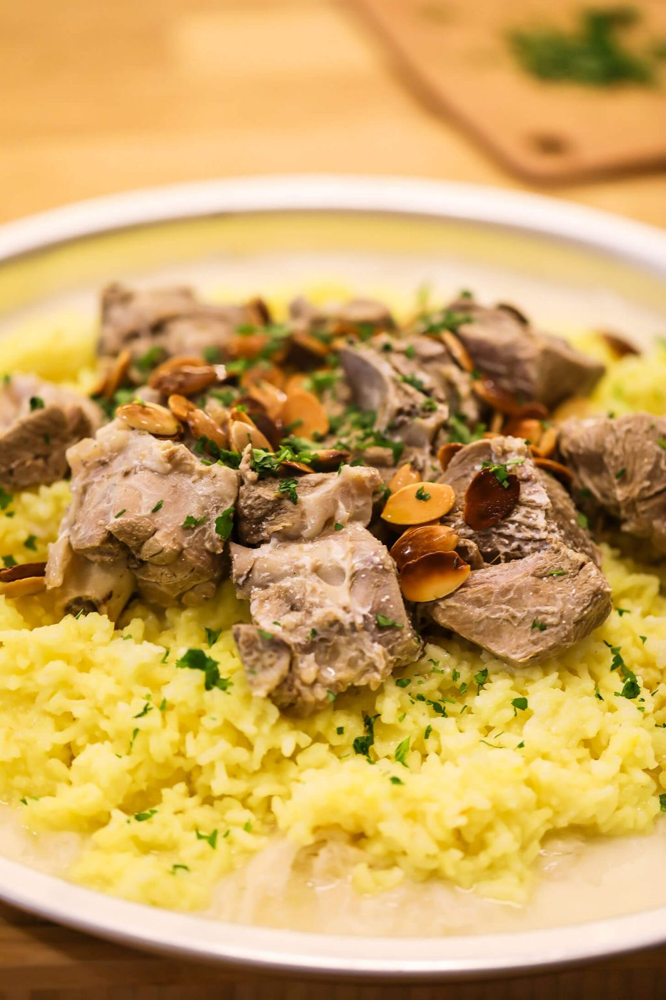

Mansaf

Description
Mansaf is considered the national dish of Jordan and is a staple in traditional Jordanian cuisine. It's a hearty, flavorful dish that features tender lamb cooked in a yogurt sauce and server on top of a bed of fragrant rice, garnished with toasted almonds and pine nuts.
The dish is typically served on special occasions, such as weddings or holidays, and is often accompanied by flatbread and a side salad.
Ingredients
- 1 kg lamb shoulder or leg, cut into chunks
- 1 large onion, chopped
- 4 cloves garlic, minced
- 2 cups plain yogurt
- 1 tbsp cornstarch
- Salt and pepper to taste
- 2 cups long-grain rice
- 4 cups water
- 1/4 cup toasted almonds
- 1/4 cup toasted pine nuts
- Flatbread and salad, to server
Steps
- In a large pot or Dutch oven, brown the lamb over medium-high heat until golden brown on all sides. Add the onion and garlic and saute until softened.
- In a separate bowl, whisk together the yogurt, cornstarch, salt, and pepper. Pour the yogurt mixture over the lamb and add enough water to cover the meat. Bring to a boil, then reduce the heat and simmer for 1-2 hours, until the lamb is tender and the sauce has thickened.
- In a separate pot, rinse the rice several times until the water runs clear. Add the water and a pinch of salt, and bring to a boil. Reduce the heat to low, cover, and simmer for 18-20 minutes, until the rice is tender and the water has been absorbed.
- To serve, spread the cooked rice on a large platter and top with the cooked lamb and sauce. Garnish with toasted almonds and pine nuts, and serve with flatbread and a side salad.
Enjoy!